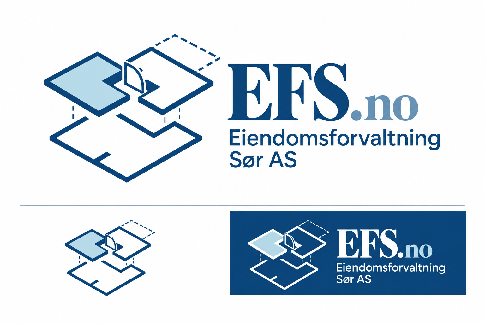

Eiendomsforvaltning Sør AS · Valgt 5. oktober 2026
EFS.no – logoprofil
Forslag 02 «Kraftigere blå». Plantegningsmerket kombinerer seksjoner, en åpen dør og flere plan. Den lyseblå delen gjør ett areal tydelig, mens stiplingen antyder tilleggsareal.

Fargereferanser
Originalbildet inneholder små fargevariasjoner. En vanlig mørk piksel måles til omtrent #0B457A; #0B3F70 er fargen som ble bestilt. Det valgte originalbildet er fasit for dagens logo.
Typografi og bruk
EFS.no har en klassisk serif med tydelige tykke og tynne streker. Selskapsnavnet står i en ren sans serif. Bruk ferdige logofiler og behold proporsjonene, den mindre .no-suffiksen og den lyseblå fargen.
Logoen er generert som raster. Eksakt fontfil er ukjent. SVG-filene nedenfor inneholder originalens PNG-piksler i en avgrenset visning og er ikke redigerbare vektortegninger eller transparente originaler.


Les hele profilen, kildehistorikken og hvordan logobyttet kan angres.
Versjon 2026-10-05-logo-02 · Eiendomsforvaltning Sør AS · Org.nr. 980 225 216